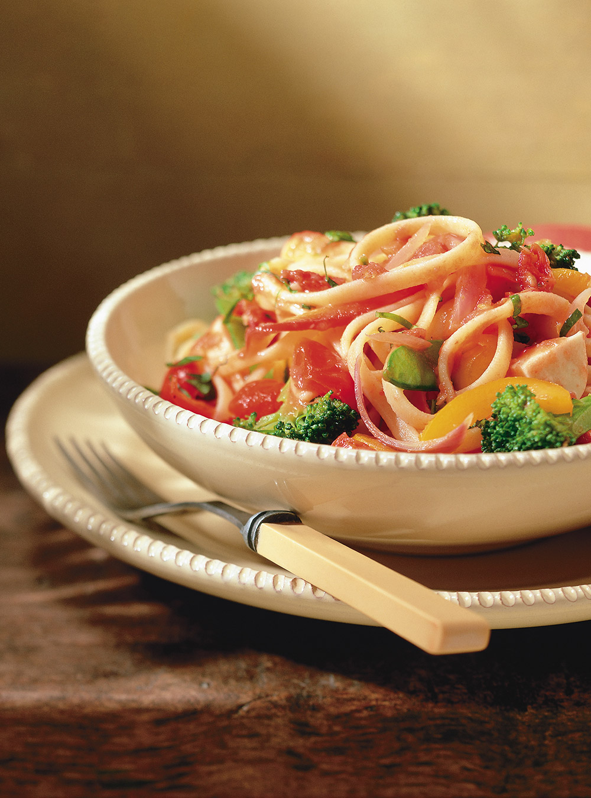

Delicious Bites Menu
Appetizers
-
Salade Caprese: Tomates fraîches, mozzarella et basilic arrosés d'un glaçage balsamique.
-
Bruschetta: Pain grillé garni de tomates hachées, ail et basilic frais.

-
Gougères: Petits choux au fromage servis chauds.
Main Courses
-
Saumon grillé: Filet de saumon assaisonné et grillé à la perfection, servi avec une sauce au beurre citronné.
-
Poulet au citron: Blanc de poulet mariné, rôti et servi avec des légumes de saison.
-
Pâtes Primavera: Pâtes fraîches avec des légumes de saison et une sauce légère à l'ail.

Desserts
-
Fondue au chocolat: Assortiment de fruits et de guimauves servis avec une riche fondue au chocolat.

-
Tarte Tatin: Tarte aux pommes caramélisées servie tiède avec de la crème fraîche.
-
Mousse au chocolat: Mousse légère et aérienne au chocolat noir, garnie de crème fouettée.
Contactez-nous pour les réservations